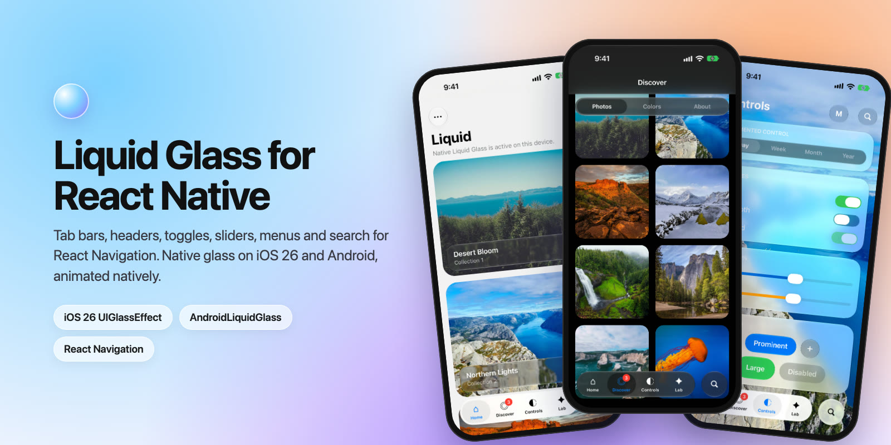
Liquid Glass for React Native
Tab bars, headers, toggles, sliders, menus and search that plug straight into React Navigation. Native glass on iOS 26, Compose glass on Android, and every animation runs natively.
A CSS sketch of LiquidBottomTabBar. Click a tab. The real component draws native glass with a liquid drop that follows your finger.
Overview
@mohamedabdelnaby/react-native-liquid gives React Native apps the iOS 26 Liquid Glass look on both platforms, with components shaped to drop into React Navigation as custom tab bars and headers.
Gallery
The example app on iOS 26. Every glass surface here is a component from this library.
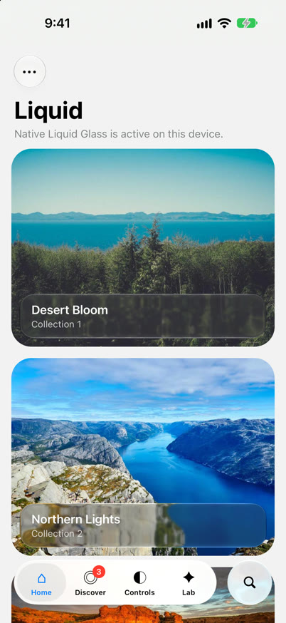
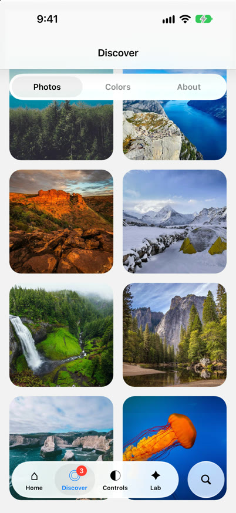
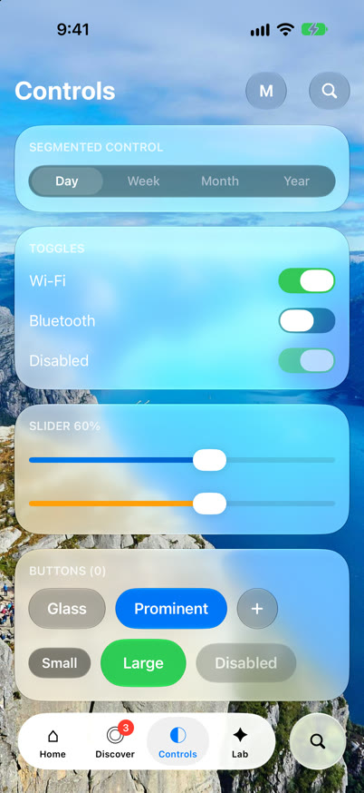
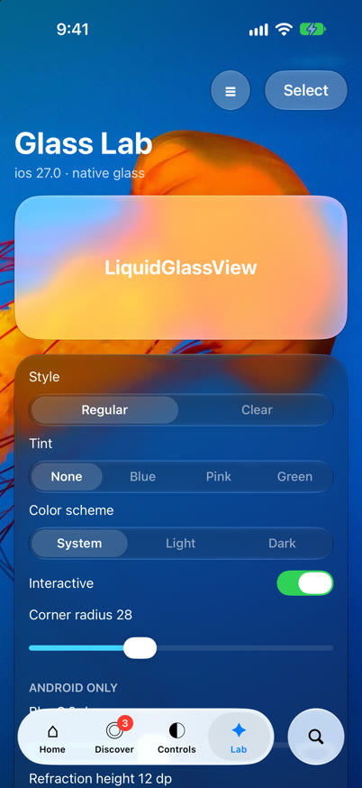
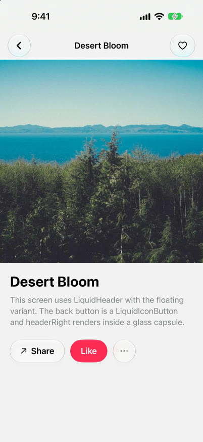
Installation
yarn add @mohamedabdelnaby/react-native-liquid react-native-safe-area-contextInstall the navigators you use, for example @react-navigation/bottom-tabs, @react-navigation/material-top-tabs or @react-navigation/native-stack. They are optional peer dependencies.
Then rebuild the native app:
cd ios && pod install && cd ..
npx react-native run-ios
npx react-native run-androidRequirements
- React Native 0.80+ with the New Architecture (Fabric). Works in React Native CLI apps and Expo dev builds, not in Expo Go.
- iOS: build with Xcode 26+ to get Liquid Glass on iOS 26 devices. Older iOS versions get a system blur material.
- Android: Kotlin 2.2+ in the app. Glass needs Android 12+, lens refraction Android 13+. Older versions get a frosted material.
How it works
iOS
- Glass is
UIGlassEffectandUIGlassContainerEffectin Fabric components. - The tab bar drop is a clear glass lens driven by a
CADisplayLinkspring. UISwitch,UISliderandUIButtonmenus give the system glass controls.
Android
- Each glass view hosts a small Compose view drawn with AndroidLiquidGlass (vibrancy, blur, lens).
- The views behind the glass are recorded into a
RenderNodeevery frame, so scrolling content stays live under the bars. - Springs run on
Choreographer, never on the JS thread.
SurfaceView, some video and map views) is not sampled on Android, and glass shapes do not merge there: LiquidGlassContainer is a plain view on Android.Bottom tab bar
A floating glass bar for @react-navigation/bottom-tabs. Pressing lifts a glass drop out of the pill. The drop follows your finger, stretches with its speed, magnifies the tabs and melts back into the pill. In light mode the bar is frosted white with a soft gray pill; in dark mode it is frosted dark gray with a darker pill.
import { createBottomTabNavigator } from '@react-navigation/bottom-tabs';
import { createLiquidBottomTabBar } from '@mohamedabdelnaby/react-native-liquid';
const Tab = createBottomTabNavigator();
// Create the tabBar function once, outside of render.
const tabBar = createLiquidBottomTabBar({ search: { placeholder: 'Search' } });
export function Tabs() {
return (
<Tab.Navigator tabBar={tabBar}>
<Tab.Screen name="Home" component={Home}
options={{ tabBarIcon: ({ color }) => <HomeIcon color={color} /> }} />
<Tab.Screen name="Settings" component={Settings} />
</Tab.Navigator>
);
}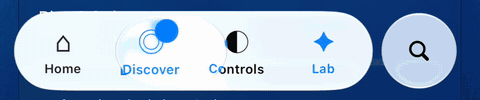
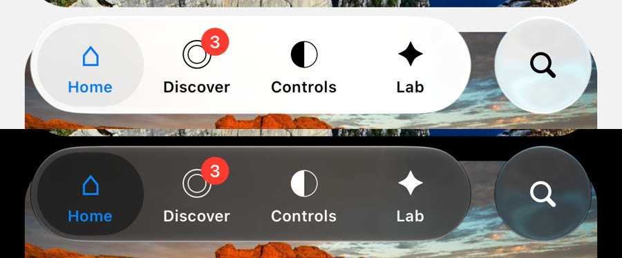
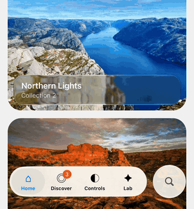
search: the bar rises above the keyboard.The bar floats over the screens. Pad scrollable content with useBottomTabBarHeight(); the bar reports its height to it.
It reads tabBarIcon, tabBarLabel, tabBarShowLabel, tabBarBadge, tabBarBadgeStyle, tabBarActiveTintColor, tabBarInactiveTintColor, tabBarLabelStyle, tabBarAccessibilityLabel, tabBarButtonTestID, tabBarHideOnKeyboard and tabBarStyle: { display: 'none' }, and emits tabPress and tabLongPress.
| Option | Default | Description |
|---|---|---|
search | Adds a search button after the bar that morphs into a field with a close button. The tabs fade out and the bar rises above the keyboard. Takes placeholder, value, onChangeText, onSubmit, expanded, defaultExpanded, onExpandedChange. Replaces accessory. | |
accessory | Any element in a separate glass circle after the bar. Wrap it in a Pressable. | |
glassStyle | 'clear' | 'regular' or 'clear'. |
glassTintColor | theme frost | Tints the glass. Defaults to colors.tabBarGlass. |
blur | 0.8 | Frosts the content under the bar, from 0 (clear) to 1. |
selectionColor | theme pill | Color of the resting pill behind the focused tab. |
activeTintColor / inactiveTintColor | Override the screen options. | |
lens | true | Lifts the liquid drop while pressing and dragging. |
colorScheme | 'system' | 'system', 'light' or 'dark'. |
height | 62 | Height of the capsule. |
horizontalMargin | 20 | Distance from the screen edges. |
bottomOffset | safe area | Distance from the bottom edge. |
style | Style of the capsule. |
Top tab bar
A floating segmented bar for @react-navigation/material-top-tabs, with the same drop and the same frosted look as the bottom bar. While swiping pages, the pill and the label colors follow the pager position natively.
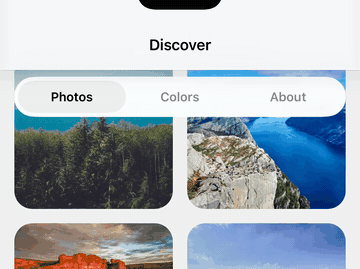
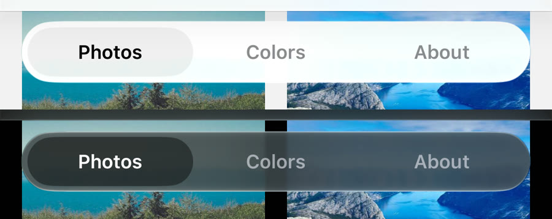
import { createMaterialTopTabNavigator } from '@react-navigation/material-top-tabs';
import {
createLiquidTopTabBar,
LIQUID_TOP_TAB_BAR_HEIGHT,
} from '@mohamedabdelnaby/react-native-liquid';
const TopTab = createMaterialTopTabNavigator();
const tabBar = createLiquidTopTabBar();
<TopTab.Navigator tabBar={tabBar}>
<TopTab.Screen name="Photos" component={Photos} />
<TopTab.Screen name="Albums" component={Albums} />
</TopTab.Navigator>
// The bar floats over the pages: pad their content.
<FlatList contentContainerStyle={{ paddingTop: LIQUID_TOP_TAB_BAR_HEIGHT }} … />| Option | Default | Description |
|---|---|---|
floating | true | Floats the bar over the pages so content scrolls under the glass. Pad content with LIQUID_TOP_TAB_BAR_HEIGHT (60). |
glassStyle | 'clear' | 'regular' or 'clear'. |
glassTintColor | theme frost | Same frost as the bottom tab bar by default. |
blur | 0.8 | Frosts the content under the bar, from 0 to 1. |
selectionColor | theme pill | Color of the pill behind the focused tab. |
lensTintColor | theme | Tints the glass of the drop. |
activeTintColor / inactiveTintColor | Override the screen options. The drop uses the active color too. | |
lens | true | Lifts the drop while pressing. |
colorScheme | 'system' | Forces light or dark. |
height | 44 | Height of the capsule. |
style / containerStyle | Style of the capsule / of the view around it. |
Header
A glass header for native-stack, stack, bottom-tabs and drawer navigators.
import { createNativeStackNavigator } from '@react-navigation/native-stack';
import { createLiquidHeader } from '@mohamedabdelnaby/react-native-liquid';
const Stack = createNativeStackNavigator();
const header = createLiquidHeader(); // or createLiquidHeader({ variant: 'bar' })
<Stack.Navigator screenOptions={{ header, headerTransparent: true }}>
…
</Stack.Navigator>variant: 'floating'(default): a round glass back button, the title, andheaderRightin a glass capsule, over the content like iOS 26.variant: 'bar': a full-width glass bar.
With headerTransparent: true the content scrolls under the glass; pad it with useLiquidHeaderHeight() (safe area + LIQUID_HEADER_HEIGHT, 56). Options read: title, headerTitle, headerTitleAlign, headerTitleStyle, headerTintColor, headerLeft, headerRight, headerBackTitle. Config: variant, glassStyle, glassTintColor, colorScheme, style.
Glass view & container
import { LiquidGlassView, LiquidGlassContainer } from '@mohamedabdelnaby/react-native-liquid';
<LiquidGlassView cornerRadius={24} style={{ padding: 16 }}>
<Text>On glass</Text>
</LiquidGlassView>
// Neighbouring glass merges and morphs (iOS 26).
<LiquidGlassContainer spacing={8} style={{ flexDirection: 'row', gap: 16 }}>
<LiquidGlassView morph interactive cornerRadius={22} style={{ width: wide ? 104 : 44, height: 44 }} />
<LiquidGlassView morph interactive cornerRadius={22} style={{ width: 44, height: 44 }} />
</LiquidGlassContainer>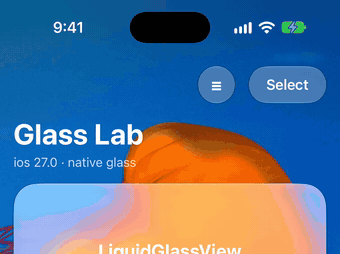
bare LiquidMenu inside it.spacing below the gap between its children. The shapes then fuse only while they morph and rest apart. A larger spacing makes them bulge toward each other.| Prop | Default | Description |
|---|---|---|
glassStyle | 'regular' | 'clear' is more transparent, for media. |
tintColor | Tints the glass. | |
interactive | false | Native interactive glass on iOS 26; a press highlight on Android. |
cornerRadius | style.borderRadius | Above half the shortest side gives a capsule. |
morph | false | Animates size and position changes as a liquid morph. |
colorScheme | 'system' | Forces the light or dark material. |
blurRadius | 8 (clear: 2) | Android: backdrop blur in dp. |
refractionHeight / refractionAmount | 12 / 24 | Android 13+: lens refraction in dp. |
chromaticAberration, depthEffect | false | Android 13+: lens options. |
highlight, shadow | true | Android: rim highlight and drop shadow. |
spacing (container) | 0 | Distance at which glass children start blending (iOS 26). |
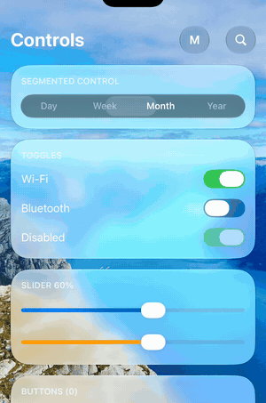
Toggle
<LiquidToggle value={enabled} onValueChange={setEnabled} />Pressing turns the thumb into a clear glass lens that grows past the track, slides while the track fills with color, then settles back into a solid thumb. Native on both platforms (UIKit and Compose), and every part can be recolored. Props: value, onValueChange, disabled, onTintColor (track when on), offTintColor (track when off), thumbTintColor (thumb at rest), lensTintColor (glass lens while pressed), colorScheme, style, accessibilityLabel, testID. Horizontal drags are not stolen by a parent scroll view.
Slider
<LiquidSlider value={volume} onValueChange={setVolume} step={0.1} />Props: value, minimumValue (0), maximumValue (1), step (0 = continuous), onValueChange, onSlidingStart, onSlidingComplete, disabled, tintColor, colorScheme, style.
Segmented control
<LiquidSegmentedControl segments={['Day', 'Week', 'Month']} selectedIndex={i} onChange={setI} />Props: segments, selectedIndex, onChange, height (36), glassStyle, colorScheme, activeTintColor, inactiveTintColor, selectionColor, disabled, style, textStyle.
Search
LiquidSearchBar
<LiquidSearchBar value={query} onChangeText={setQuery} placeholder="Search" />A glass search field. Takes the TextInput props plus glassStyle, colorScheme, height (44), inputStyle and onClear.
LiquidExpandableSearch
<LiquidExpandableSearch value={query} onChangeText={setQuery} placeholder="Search settings">
<Text>Controls</Text> {/* shown next to the button while collapsed */}
</LiquidExpandableSearch>A round glass button that morphs into a field with a separate close button, 16 pt apart. Props: expanded / defaultExpanded / onExpandedChange, value, onChangeText, onSubmit, placeholder, height (44), glassStyle, glassTintColor, colorScheme, style. The bottom tab bar's search option uses it.
Theme & utilities
const { scheme, colors } = useLiquidColors('system');
if (isLiquidGlassSupported) { … }useLiquidColors(setting?)returns the scheme and the palette used by the components:label,secondaryLabel,tint,success,selection,tabSelection,tabBarGlass,topTabLens,track,thumb.getLiquidColors(scheme)anduseLiquidColorScheme(setting)for use outside components.isLiquidGlassSupported:trueon iOS 26+ and Android 12+.createLiquidBottomTabBar,createLiquidTopTabBar,createLiquidHeaderreturn render functions; create them once outside of render.
Troubleshooting
"No member named … in …Props" when building iOS
The native props changed. Run pod install again to regenerate codegen, then rebuild.
"Unable to load script" on an Android phone
The phone lost its connection to Metro, often after a USB reconnect. Forward the Metro port again:
adb reverse tcp:8081 tcp:8081Content does not show through the glass on Android
Views drawn in their own surface (SurfaceView, some video and map views) cannot be sampled. Place glass over regular views.
Glass is blank after navigating back on Android
Update to the latest version: glass views keep their composition while react-native-screens detaches them.